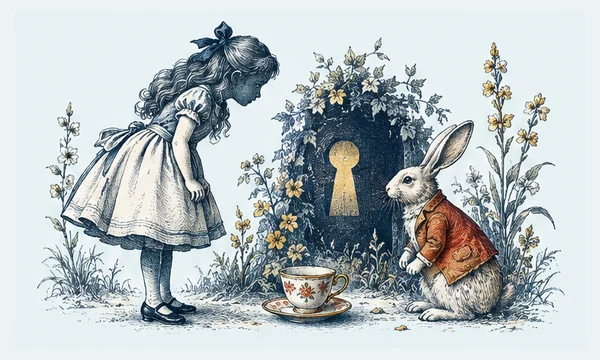
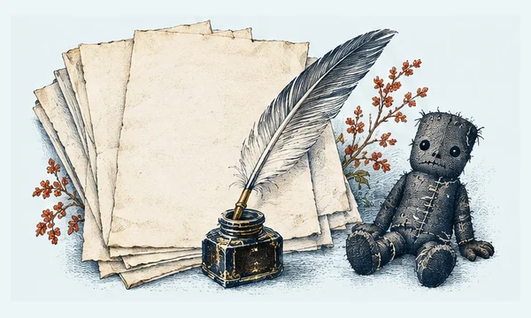
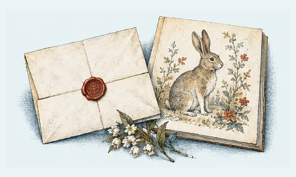
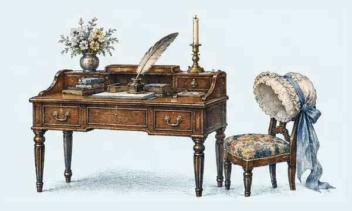
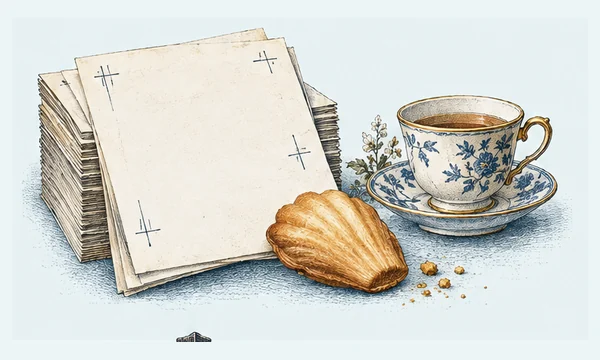
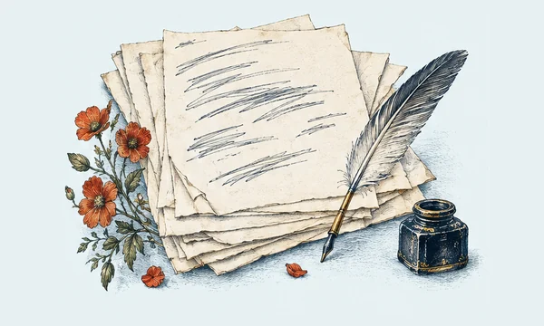
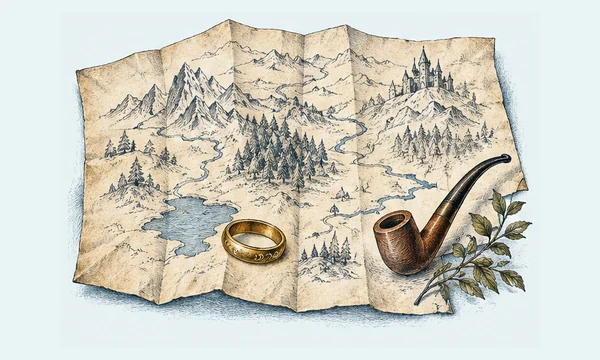

A Little Wonder collection
Between the Lines
Books, their makers, and the stories hiding in the margins.
10 illustrated discoveries10 discoveries to explore
The Book That Kept Eighteen Plays Alive
A book can become a rescue boat without looking like one. Shakespeare’s First Folio appeared in 1623, seven years after his death, gathering plays that had lived on stage and in scattered print.

Before Wonderland Had a Cheshire Cat
Before there was a Cheshire Cat, there was a handwritten book made for one particular child. Lewis Carroll’s Alice’s Adventures Under Ground began as a story told to Alice Liddell and her sisters during a boat trip in 1862.

Frankenstein, Written in Layers
Frankenstein did not arrive fully formed from a stormy summer. Its paper trail shows Mary Shelley turning an early story into a novel through notebooks, revisions, and successive fair copies.

Peter Rabbit Began as a Letter
Peter Rabbit first hopped into the world by post. In 1893, Beatrix Potter sent an illustrated story to Noel Moore, a five-year-old recovering from scarlet fever, drawing on her pet rabbit, Peter Piper.

Jane Austen Before the Drawing Room
Long before the quiet wit of her novels, Jane Austen was writing uproarious stories for a lively audience at home. Three notebooks preserve short pieces she wrote from childhood into her teens.

Proust’s Novel in the Margins
The printed page looks finished; the proof sheet shows thought still moving. Marcel Proust’s In Search of Lost Time took shape through notebooks, preliminary drafts, and heavily corrected proofs.
The Tale That Became a Thousand-Year Conversation
A novel can outlive its first readers by becoming a source of new art. The Tale of Genji, written by Murasaki Shikibu at the early eleventh-century imperial court, has inspired artists across a millennium.
A New Machine in an Old Book’s Clothing
The Gutenberg Bible announced a new technology in a familiar visual language. Printed in Mainz around 1455, it used movable metal type, yet its pages imitated the dense Gothic script of handmade books.

A Poem’s Many First Attempts
A poem is not always born in its final rhythm. Drafts of Langston Hughes’s “The Ballad of Booker T” let readers see the poet testing and revising his work within the creative world of the Harlem Renaissance.

Middle-earth, Before It Was a Map in Your Mind
A fictional world can be drawn as well as written. The Bodleian Libraries’ Tolkien exhibition brought together draft manuscripts, illustrations, and maps made for The Hobbit and The Lord of the Rings.
An unplanned detour
What will you find?
Sometimes the best place to begin is anywhere.